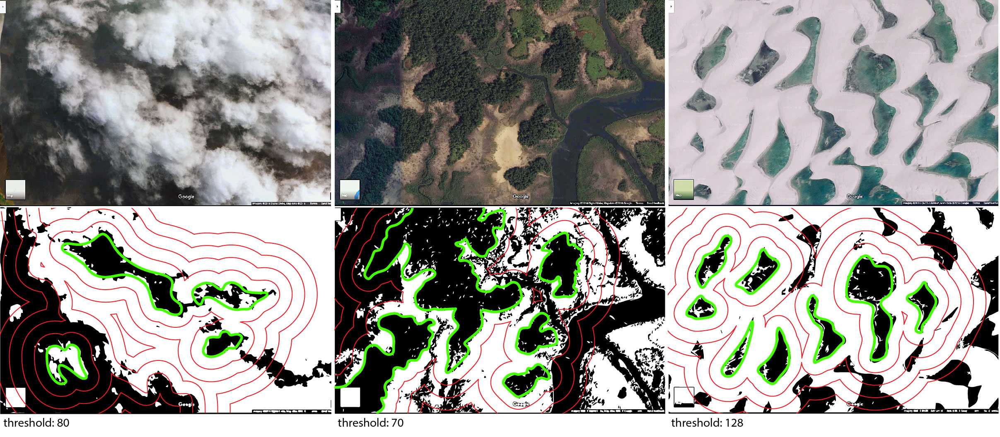
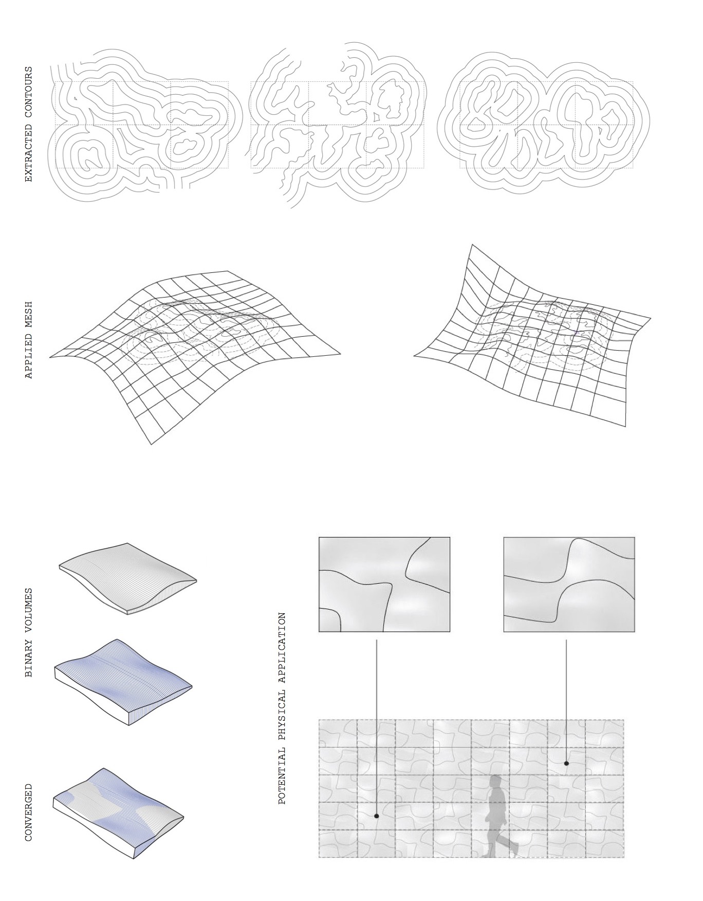
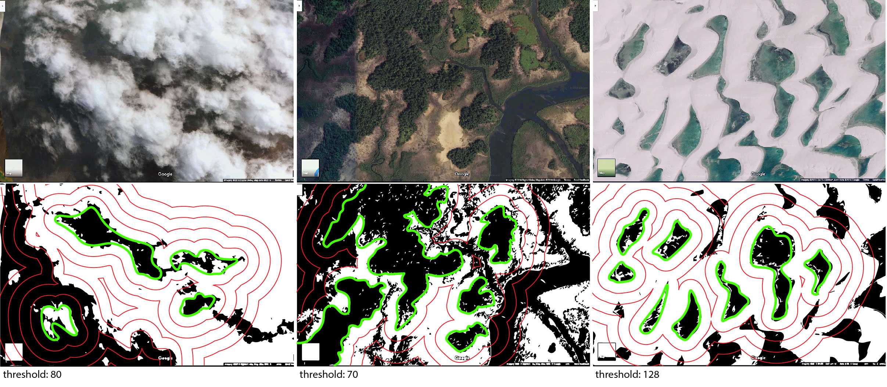
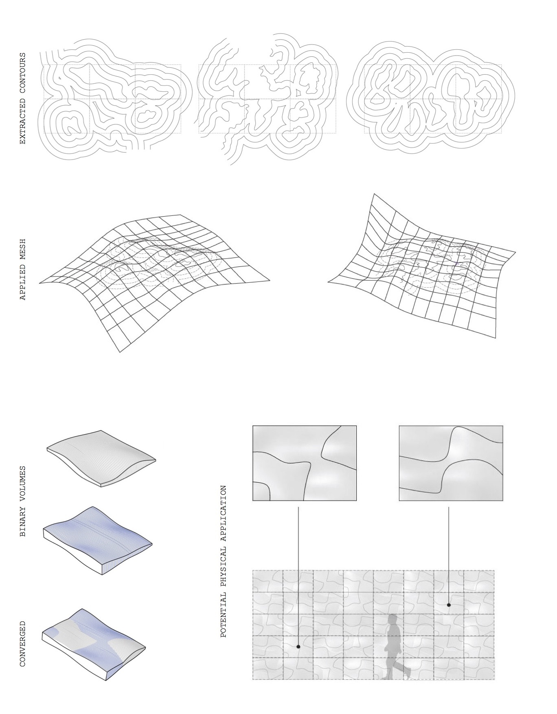
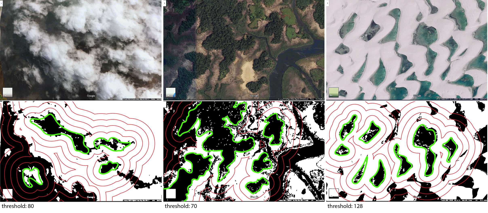
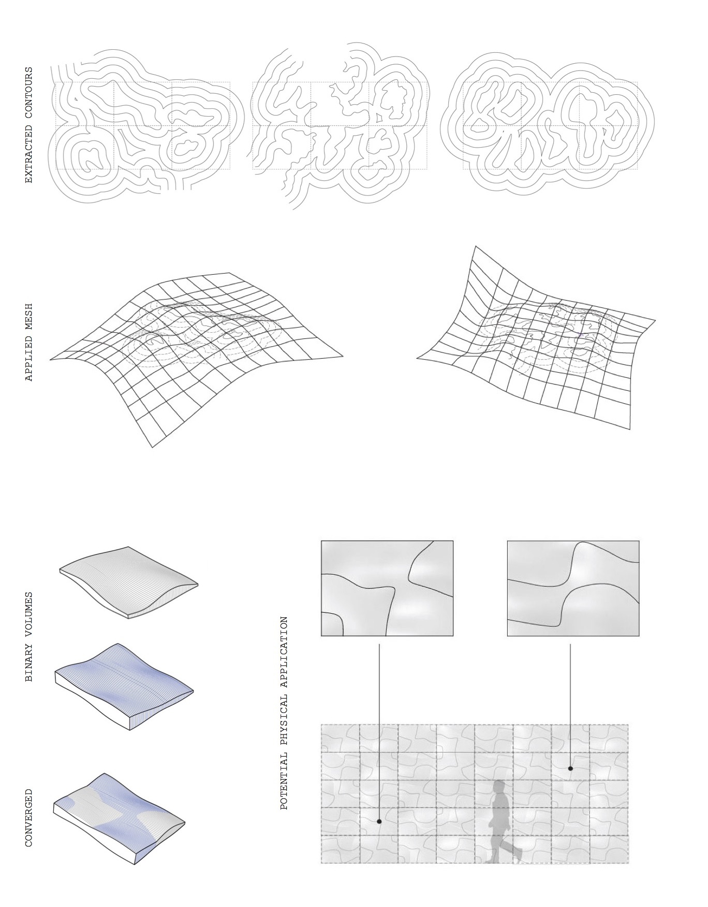

Satellite images reveal much about the beauty and diversity of earth’s surface that we cannot see. Nature’s topographies— whether organic or artifcial and existing in all physical states of matter— create unique moments when they touch, intertwine, and encapsulate. Through the distilling these converged landscapes, this piece captures the impermanence and ephemeral qualities of geographical phenomena and manifests them into a form that is scaled for the human experience.

